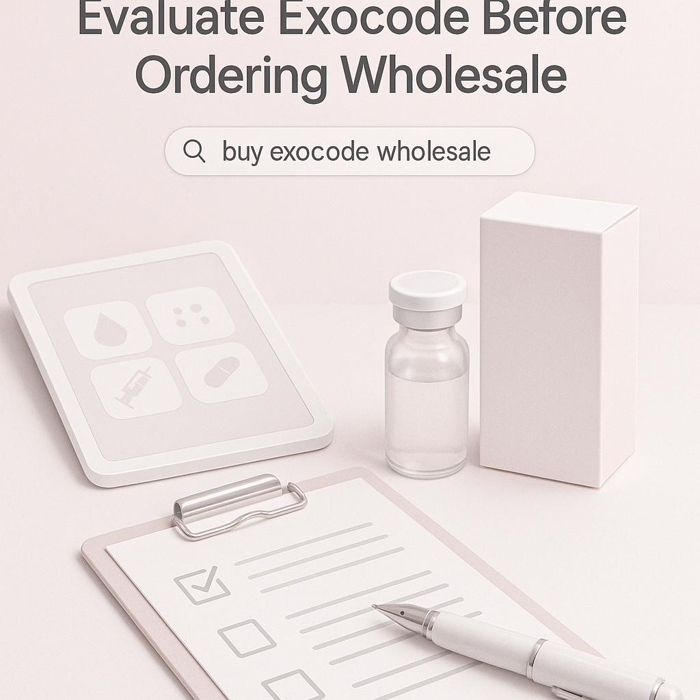
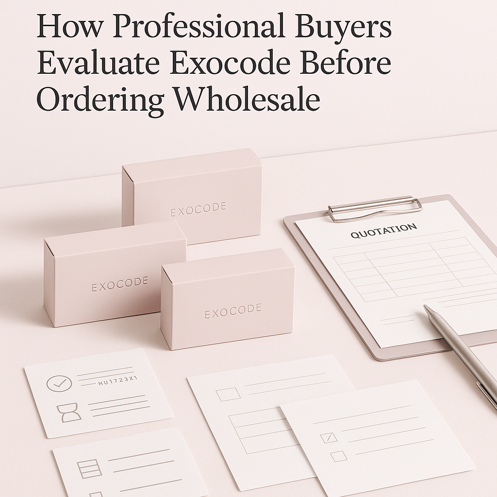

This guide helps professional buyers evaluate Exocode before ordering wholesale, covering key insights and practical tips for effective procurement.
When it comes to sourcing Exocode for your clinic, spa, or distribution business, understanding how to evaluate potential suppliers is crucial. Professional buyers face the challenge of ensuring that they are making informed decisions that align with their operational needs and compliance requirements. With the increasing popularity of exosome products, the stakes are higher than ever.
This article will provide you with essential insights into how to buy Exocode wholesale effectively. By understanding the key aspects of product evaluation, you can streamline your procurement process and ensure that you are partnering with the right suppliers.
Key Takeaways
- Assess supplier reliability through reviews and testimonials to gauge their credibility.
- Understand the importance of product documentation and certifications for compliance.
- Evaluate packaging options to ensure product integrity during shipping and handling.
- Communicate clearly with suppliers about your specific needs and expectations to avoid misunderstandings.
- Plan your orders based on minimum order quantities (MOQ) and reorder timelines to maintain stock levels.
What this guide covers
- Understanding Exocode and its applications
- Identifying relevant buyer scenarios
- Comparing supplier options effectively
- Checklist for requesting quotes
- Logistics considerations for shipping and documentation
- Planning for MOQ and reorder strategies
- Common buyer questions
What buyers should understand first

Exocode is a cutting-edge product derived from exosomes, which are extracellular vesicles that play a significant role in cellular communication. These products are increasingly sought after for their potential benefits in various applications, including aesthetics and regenerative medicine. As a professional buyer, it is essential to understand the nature of Exocode and the factors that contribute to its quality and effectiveness. This understanding will help you make informed decisions when sourcing these products for your business.
Exosomes are naturally occurring and have been shown to facilitate communication between cells, promoting healing and regeneration. Exocode products harness these properties, making them valuable for clinics and spas that aim to offer advanced treatments. However, the market is filled with varying quality levels, and buyers must be diligent in their evaluation process to ensure they are sourcing high-quality products that meet their standards.
Which buyers is this most relevant for?
This guide is particularly relevant for clinics, spas, resellers, and distributors looking to incorporate Exocode into their offerings. Each of these business types has unique order planning needs. For instance, clinics may require smaller quantities for specific treatments, while resellers might focus on bulk purchases to meet client demand. Understanding your business model and customer needs will help you evaluate Exocode effectively before placing orders.
Additionally, distributors must consider the logistics of storage and distribution, ensuring that they can maintain product integrity throughout the supply chain. This guide will help you navigate these complexities and make informed decisions that align with your business objectives.
How to compare options before ordering
When considering different suppliers for Exocode, it is vital to compare several key criteria:
- Product Type: Ensure that the Exocode product aligns with your intended use and application.
- Brand Reputation: Research the supplier's reputation and the quality of their products through reviews and industry feedback.
- Packaging: Check if the packaging is suitable for maintaining product integrity during transport and storage.
- Batch and Expiry Visibility: Ensure that suppliers provide clear information on batch numbers and expiration dates for traceability.
- Supplier Communication: Evaluate how responsive and informative the supplier is during your inquiry process, as good communication is key to a successful partnership.
- Destination Requirements: Consider any specific shipping requirements based on your location and regulatory standards.
Buyer checklist before requesting a quote

- Define your product specifications and intended use to ensure clarity in your request.
- Determine your budget and expected price range to align with your financial planning.
- Identify your minimum order quantity (MOQ) requirements to avoid overcommitting.
- Gather necessary documentation for compliance and quality assurance, such as licenses and certifications.
- Prepare a list of questions for potential suppliers to address any concerns you may have.
- Clarify shipping and packing preferences to ensure products arrive in optimal condition.
- Establish a timeline for order fulfillment and delivery to manage your inventory effectively.
Shipping, packing and documentation questions
Logistics play a crucial role in the procurement process. Here are some realistic questions to consider regarding shipping, packing, and documentation:
- What are the shipping options available for Exocode products, and how do they impact delivery times?
- How will the products be packed to ensure they arrive in optimal condition, and what materials are used?
- What documentation is required for customs clearance, and can the supplier assist with this process?
- Can the supplier provide tracking information for shipments to monitor progress?
- What are the policies regarding damaged or lost shipments, and how are claims processed?
MOQ, quotation and reorder planning
When preparing to order Exocode wholesale, it is essential to plan your quantities and variants carefully. Consider the following:
- Assess your current inventory levels to determine how much Exocode you need for upcoming treatments.
- Understand the supplier's MOQ requirements and how they align with your needs to avoid stockouts.
- Plan for potential variations in product types or sizes based on your clientele's preferences.
- Communicate your destination details clearly to avoid shipping delays and ensure compliance with local regulations.
- Contact SOLA to confirm current availability and request a wholesale quotation tailored to your specific requirements.
FAQ
What is Exocode used for?
Exocode is primarily used in aesthetic and regenerative applications, leveraging the properties of exosomes for various treatments.
How do I ensure product quality?
Request documentation from suppliers, including certificates of analysis and quality assurance protocols to verify product integrity.
What should I consider when planning my order?
Consider your business needs, MOQ, and reorder timelines to avoid stock shortages and ensure smooth operations.
How can I communicate with suppliers effectively?
Prepare a clear list of questions and expectations before reaching out to suppliers to facilitate productive discussions.
Can SOLA assist with my wholesale orders?
Yes, SOLA can help confirm availability and provide wholesale quotations tailored to your needs.
Contact SOLA for wholesale quotation via WhatsApp.
Planning a wholesale request?
Send product names, quantities and destination for a tailored discussion.
Contact SOLA on WhatsApp →General educational content for professional buyers. Not medical, legal, regulatory or import advice.